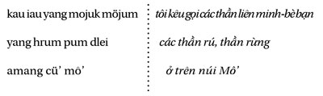

Chương 17
G hi chú ngôn ngữ dân tộc học: Trong chương này, sẽ chủ yếu nói về các möyun - những người bị ám và những kẻ phát điên, dịch tạm thời và chỉ gần đúng. Từ gốc yut là một hình thái động từ chỉ việc thực hiện một động tác đi đi lại lại; tiền tố mö khiến nó gần về mặt ngữ pháp với möyun , người thầy pháp, mà chúng ta vừa thấy, và cả về mặt tâm lý ngữ nghĩa học bởi vì người möyun , cũng như người möyun , có thể được mời đến khám bệnh trong trường hợp phải chữa một bệnh nặng - đấy là chưa nói đến sự gần gũi giữa yun, là động tác khuỵu xuống, với yut, cũng là động tác, đi đi lại lại.
Möyun gần với göyut (cùng gốc), có nghĩa là bạn, bạn đường, và với möjuk (cùng tiền tố và cùng vần thông) là từ, ghép với möjum (jum: đặt chung), chỉ các thần rừng, yang möjuk möjum, được cầu khấn khi săn, hay trong trường hợp đau ốm, hoặc khi nói về những người “bị ám”. möyun chỉ một mối quan hệ, có tính chất giới tính, giữa một người đàn ông và một thần linh; göyut chỉ một mối liên hệ, chỉ có tính cách bạn hữu, giữa hai người đàn ông.
Möyun là một con người, (thông thường là đàn ông) đi lại giữa rừng và làng, là “bạn” của các cô gái-rừng, giống như thợ săn mögap và thầy pháp möyun ; nhưng, khác với họ, chính anh ta bị mê hoặc (bị cầm giữ, bị thu bắt) bởi các thần linh hoang dã, đến mức có thể bỏ hết mọi thứ vì các thần linh ấy; anh ta “bị ám”. Anh ta trốn vào rừng để gặp họ. Do yếu đuối về tâm thần, anh không thể cưỡng lại nổi các ảo ảnh của họ, anh chạy theo họ mà lại nói rằng chính họ “khiến anh chạy trốn” (pödduai') gia đình mình, làng mình, vợ mình. Bị một thần rừng ám, anh bỏ nhà lang thang đi tìm gặp nữ thần đã bắt anh và anh bảo rằng anh nhìn thấy. Bị chia xé giữa thực tế xã hội và cõi mơ tưởng của mình, anh là một con người rã rời; người Pháp gọi anh là loạn tâm thần hay là tinh thần phân lập. Người möyun là người “bị tha hóa” về mặt tâm thần (anh ta trở thành một con người khác với chính mình) và tự do về mặt thể chất; anh có thể rong chơi hoàn toàn trần truồng, tưởng mình thuộc giới tính ngược với giới tính của mình, tưởng tượng làm tình với một vị thần hoang dã, tìm lấy cái ăn trong rừng hay sống nhờ trong làng. Tuy nhiên, anh có thể trở lại bình thường: một cuộc phán xử dưới hình thức một lời nghi thức kiểu xét xử theo luật tục có thể giải thoát anh khỏi vị yang dlei mà người ta phải đền bằng một món vật hiến tế. Nên chú ý rằng xã hội Giarai, vốn không hề biết đến nhà tù và nhà tế bần (rừng chính là một thứ như thế rồi), không chỉ tìm cách tự bảo vệ mình, mà còn tìm cách bảo vệ một trong những thành viên của mình bị hiểm nguy.
Khi một con người ở trong rừng, vì lý do này hay lý do khác, trong một bối cảnh thật hay tưởng tượng, nếu anh ta mạnh mẽ về mặt cơ thể anh ta sẽ có thể là một người thợ săn mögap , nếu anh ta mạnh mẽ về mặt tâm thần anh ta sẽ là một người thầy pháp möyun , giữa (và bên trên) hai loại người đó: là cái khôn khéo, trông thật hồn nhiên, của nhân vật Drit; nếu anh ta yếu về mặt cơ thể anh ta sẽ chết vì hổ hay vì những thứ khác, nếu yếu đuối về mặt tâm thần thì đấy chính là trường hợp của người möyun có thể trở lại bình thường hoặc chết; có khi anh ta làm tình ở đấy với một người con gái-chị em - một lối quanh co để gợi lên chuyện loạn luân, khiến anh ta gần với các nữ nhân vật huyền thoại, “mang thai trong rừng”, có thể là để che giấu sản phẩm loạn luân, dẫu sao cũng là ám thị về một mối quan hệ gần như sinh học giữa người đàn bà và rừng. Còn người đàn bà, thì ta chỉ thấy nàng “ở trong rừng” trong các huyền thoại và khi đó ta biết sẽ diễn ra điều gì: hung hăng, thì nàng bị ăn thịt; nhận cảm, thì nàng kết thân (chấp nhận hay khác) với các quyền lực tại chỗ… trừ phi nàng là một cô gái-rừng “chính gốc”.
Có một vật nhỏ, rất cụ thể, thiết lập một mối liên hệ giữa mögap , möyun và möyun : đấy là viên tinh thể thạch anh hrèl (hay cöhrèl), đối với một số người là món bùa, và mọi người đều coi là một dấu hiệu “kết nghĩa-bè bạn”, göyut-göyau, với các thần rừng möjuk möjum hrum dlei , mà người ta cầu khấn như sau, đặc biệt trong trường hợp đau ốm:

tôi kêu gọi Mô’, Diung, Sak, Mom… tất cả hãy đến đây cùng với các bè bạn của các người, họ hàng các người, đến ăn và uống cùng ta món lễ vật ta dâng các người… (Tl. 12. 59).
Lời cầu khấn nghi thức này, trong đó ta nhận ra tên gọi bốn mặt của núi Mô’, được đọc trong các nghi lễ đi săn, hoặc trong khi muốn cứu một người möyun đã lâm quá xa vào rừng sâu. Các vị thần nguy hiểm đó, của rừng dlei hay của núi cü’, được gọi là “bè bạn” bằng từ möjuk ở đây gần như có cùng nghĩa với từ möyun , là người bạn của các thần đến mức trở thành điên - một thứ điên mà xã hội có thể chữa lại được khi phải chữa cho những người ốm vì bị ám bởi các thế lực không thể nắm bắt được trong rừng, nếu các thầy bói thông thường thất bại.
Một người bị ốm; họ hàng anh ta không biết làm cách nào để chữa khỏi bệnh cho anh. Người pöjau được mời đến không đủ sức; như vậy rất rõ ràng là chính các thần rừng gây ra căn bệnh. Người duy nhất có thể làm được một điều gì đó là một möyun . Người ta mời một möyun đến, một người möyun mà gia đình này có biết và chính anh ta không bị quá nặng; người ta gọi anh ta là pöjau möyun . Mọi người đều biết anh đã cưới một thần rừng, nhưng họ thận trọng không nhắc đến điều đó; họ coi anh là một người có thể chữa lành bệnh - đây là cơ may cuối cùng.
Người “bị ám” đến nhà người ốm. Thoạt tiên anh đứng ngoài hiên và huýt sáo để gọi “người tình” của mình đến (ở đây möyun có nghĩa gần với pöyu, ăn nằm với người ngoài giá thú - hai từ này không có quan hệ với nhau về mặt hình thái học). Bên trong nhà, người ta giăng những tấm mền, như một thứ màn, để tạo thành một ngăn nhỏ dùng để đón tiếp vị thần. Vị thần này đến; người bị ám nói chuyện với thần; không ai nhìn thấy thần, ngoài anh ta. Anh mời thần uống rượu, anh nghe thấy bàn tay thần chạm vào tay anh khi cầm bát rượu - cảnh này giống như cảnh đã mô tả trên kia về người thầy bói-hổ, và điều ấy chẳng có gì lạ, vì các thần rừng rất gần gũi với hổ. Người bị ám nghe thần nói với anh, thần nói cho anh biết yang nào đã gây bệnh và phải cúng cho yang những gì.
“Các möyun nhìn thấy các yang dlei , nên chúng tôi mời họ”. Sự gần gũi và cộng tác của những người bị ám với các thế lực không thể với tới được đối với những người thường, bình thường, khiến những người bị ám được xã hội cầu cạnh, ít ra là một số người bị ám nào đó, bởi dẫu sao cũng phải không quá điên để có thể giải quyết các vấn đề của người khác - đấy là trường hợp những người möyun , bị quá nặng, có nguy cơ không bao giờ trở về làng nữa, không còn tiếp xúc được với đồng loại nữa. Người bị ám-chữa bệnh là trung gian giữa người thầy pháp và người bị ám-điên; có những lúc anh ta có thể tự chủ và khi đó có thể đem tình trạng bất thường của mình phục vụ xã hội, như một kẻ trung gian tốt lành.
Người cưới một vị thần-rừng làm vợ, ấy là vì anh ta nhìn thấy vị thần ấy dưới dạng một con người như ta vẫn thường thấy. Nếu tôi chưa có vợ, thần sẽ hiện ra như một người đàn bà trong làng của tôi; nếu tôi đã có vợ, thần sẽ xóa mờ hình ảnh của vợ tôi đi, khiến tôi không còn nhìn thấy nữa, và thần thay thế vào đó; tôi không thể nhìn thấy vợ tôi nữa. Tai tôi quên hết mọi thứ, vợ, con, cha mẹ, tôi không còn nhớ gì nữa hết. Nếu tôi bỗng nhớ lại vợ, con, cha mẹ, thì thần sẽ không hiện ra nữa; tôi sẽ không thể nhận ra thần nữa…
Người bị một thần-rừng ám không biết là mình bị một vị thần ám; anh ta nhìn thấy thần và gọi thần là vợ mình. Anh không nhìn thấy vợ mình nữa, anh trốn khỏi làng để chạy theo người vợ-yang kia; còn chúng ta thì chúng ta biết và chúng ta nói rằng anh ta bị ám (Tl. 2a. 66).
Người cưới một yang thì bao giờ cũng là cưới một yang dlei (thần-rừng); thực ra đấy là một con hổ, nhưng nó hiện ra với người bị ám dưới dạng người, cho nên người bị ám có thể ra đi cùng nó, nhất là về ban đêm. Nếu ban ngày anh ta không nhìn thấy nó nữa, thì đó quả thật là một yang và khi đó thì người bị ám nhận ra (Tl. 2b. 66).
Hai tư liệu này có giọng thật khác nhau, dù chúng do Löng và Bèk, là hai người đã có vợ ở cùng một làng và cùng một tuổi kể lại, vợ của Löng là cháu gái của Bèk. Nhưng Löng (mà chúng ta sẽ còn nghe kể ở chương tiếp sau), một người nông dân bình thường, đã từng là möyun , ông ta nói về möyun từ bên trong, từ quan điểm của người möyun ; trong khi đó Bèk, là thanh tra tiểu học, lý sự và xét đoán từ bên ngoài.
Đây không phải là lần đầu tiên chúng ta nhận thấy sự đồng nhất các thần-rừng với hổ. Nói rằng “đấy là những con hổ” là ngôn ngữ của những con người “có lý trí” ở làng; đối với họ, nhất là những người có học, rừng không được coi trọng lắm, “đấy là chốn hoang dã” dlei mang nghĩa xấu và kéo theo römung (hổ). Các thần (nếu có tồn tại, ta giả định như vậy) thì vô hình; cho nên nếu một người nhìn thấy một sinh vật trong rừng, thì hẳn đấy phải là một con dã thú và người ấy hẳn là một người bị ám. Nói về một người möyun rằng anh ta làm tình với một con hổ cái là gièm pha anh ta; con hổ cái ấy chỉ tồn tại trong trí tưởng tượng của người bị ám. Mọi lời nói đều là đánh lừa nếu ta cứ bám vào từng chữ, không biết động cơ của lời nói. Về phần mình, người möyun , khi anh ta bị một yang dlei quyến rũ, anh ta không nhìn thấy nàng như một con hổ (dẫu sao anh ta cũng không điên đến mức ấy!) mà như một người con gái anh thích.

Mọi sự diễn ra cứ như là cõi mơ tưởng của xã hội, đối lập với cõi mơ tưởng của những người không bình thường, bên này lại đẩy bên kia vào cõi hư vô. Người tình của người bị ám không tồn tại đối với dân làng, cũng như gia đình của người bị ám không tồn tại đối với anh ta - tình thế này có thể so sánh với tình thế của hai bố con, người này lại thấy rằng người kia đã chết. Không thể có sự thông hiểu qua lại lẫn nhau giữa người ở bên này và người ở bên kia “tấm gương” - phía bên kia là cõi âm của những người bị ám hay cõi chết của những người đã qua đời, cõi âm này dẫn đến cõi chết kia. Xã hội không ghét bỏ người bị ám của mình; anh vẫn là người làng, người của gia đình; người ta yêu mến anh. Xã hội không công kích anh cũng như không trách giận “nó” (nyu, đại từ nhân xưng ngôi thứ ba, giống đực hay giống cái; người ta, nhất là người möyun khi kể chuyện thường hay gọi yang dlei như vậy), “nó” là cái cô nàng (cái ảo giác) đã ám con người khốn khổ kia. Để cố giải thoát cho anh ta khỏi nó, cũng như để tự bảo vệ cho chính mình (bởi biết đâu mà lường), xã hội tiến hành một nghi thức đặc biệt.
Ghi chú riêng : Tôi nằm mơ. Tôi thấy, bên phải tôi, những người vẫn sống thực quanh tôi, những người quen biết, và, bên trái tôi, những con người ảo ảnh, một thế giới chiêm mộng, một giấc mơ trong giấc mơ. Mặc dầu tôi đứng giữa hai thế giới này, nhưng tôi không thể nào nối chúng lại với nhau; không cái gì từ bên này có thể chuyển sang bên kia. Tôi nêu điều ấy lên vừa để minh họa cho những gì tôi vừa viết vừa để chỉ ra rằng, nếu ta muốn thấu hiểu chút gì đó về cõi mơ tưởng của một dân tộc, không những ta phải biết nằm mơ (mọi người đều nằm mơ, ngay đến cả chó cũng vậy), mà còn phải biết nằm mơ với những hình ảnh và những từ ngữ của dân tộc nói đến đó (tôi đã trải qua những trường hợp như vậy - nhiều người Giarai đã nghe tôi nói bằng tiếng Giarai trong khi nằm mơ, những đêm tôi ngủ ở nhà họ) và có ý thức về điều đó - một giấc ngủ nhẹ là điều kiện, để cho giấc mơ có thể đánh thức mình dậy.
Khi một người möyun , bị một cô gái-rừng bắt, có vẻ như đã bỏ ra đi hẳn, mà anh ta lại đã có vợ ở làng, sự việc trước tiên gây tổn hại cho vợ của anh ta, người vợ thật của anh ta, và đó là điều nghiêm trọng trong một xã hội mẫu hệ. Thường khi đó gia đình anh phải mời một già làng để giải quyết sự vụ, tức là tuyên bố một cách nghi thức việc ly dị (pötloh, chia cách giữa vợ chồng, người ta dùng đúng từ đó) của người đàn ông khốn khổ với cô gái-rừng của anh ta. Lời tuyên bố này được trình bày như một “lời phán quyết” (phat köddi yang , giải quyết sự vụ thần, từ ngữ chuyên môn), nhưng đối với người phân tích, thì trong thực tế lại được trình bày như là một “lời cầu khấn”, một lời khấn nghi thức, vả chăng phán quyết (kol köddi, phán quyết sự vụ) ở đây chẳng hề giống như trong vụ ly hôn thông thường: bốn con trâu cho bên bị tổn hại, cộng thêm một con lợn phí tổn vụ án. Vả lại già làng được gia đình mời đến không phải là một chuyên gia về việc xử kiện mà là một người cầu cúng truyền thống, chuyên về việc cầu khấn. Không nên quên rằng đây là các yang dlei mà người ta không thể nói chuyện như với những con người bình thường; điều đó khiến người Giarai làm cho lời cầu khấn này trở thành một vụ dàn xếp tranh chấp (trong diễn từ rõ ràng của họ).
Người khấn đứng một mình, giữa rừng, và đọc:
Hỡi ngài, ngài Ji, ngài Jung, Mium, Miam và Kram / tôi khấn cùng lúc mẹ-của-Ju, mẹ-của-Bbak, Hdla’, Hkra’ / các người ở quá xa, hãy bỏ qua thôi / các người ở quá xa, hãy quên đi, đừng hối tiếc / này đây là ché rượu và gà ta dâng các người / trong rừng này / hãy bỏ qua đi, đừng giữ lại làm gì / hãy ăn tim con gà này, hãy uống rượu ché này / hãy rộng lượng với người Giarai, các thần đừng có lại hại họ / đừng có giận chúng tôi, đừng nổi giận / hãy thương các nhà chúng tôi, cho chúng tôi lúa và ngô! (Tl. 4. 66).
Ông đứng giữa rừng, cúng ba bát rượu cần, ba miếng thịt gà, ba lá thuốc hút. Ông cầm trong tay hai chiếc vòng, một chiếc làm bằng sợi tre (giả) mà ông ném vào rừng, còn chiếc kia bằng đồng thau thì ông sẽ trao cho người möyun (nếu gia đình anh ta tìm được anh ta). Đã đọc xong lời tuyên bố ly hôn và làm yên lòng các thần như vậy rồi, ông trở về làng, nói với gia đình người moyut những gì ông đã làm - cấm họ không được nói lại với những người xa lạ, không chỉ xa lạ với tộc người và với làng, mà cả với những người thân của người möyun . Nếu người möyun trở về, gia đình vợ anh ta sẽ nói cho anh biết anh đã được giải thoát khỏi giao kết với các “con hổ cái” của anh; nếu anh muốn, anh sẽ trở lại đời sống vợ chồng như xưa. Nghi lễ kết thúc bằng việc cúng một con lợn, kèm ba ghè rượu - là một tốn kém nhẹ đối với một cuộc ly hôn, dầu là khi hai bên đều thuận tình.
Ji và Jung là tên các thần-hổ, cũng được cầu khấn trong nghi lễ kết giao của người thợ săn mögap ; tên các người đàn bà kế tiếp theo đó là được kể ra một cách hú họa trong danh sách giới hạn các thần rừng có thể bắt người (người ta không thể biết cụ thể chuyện này liên quan đến ai), đấy là những người tình coi như chính thức của người bị ám được nói đến.
Vụ giải quyết tranh chấp, có phán quyết về ly hôn, vừa kể trên đây, là của ông bố-cái-Hnyeng ở làng Hyao, nay đã mất, đấy là một con người “có gan” (can đảm), “ngày nay chẳng còn mấy ai được như vậy”, dám đi vào rừng ban đêm, lại là một người mögap chân chính. Và thông thường, để giải quyết những sự vụ như thế này, với các thần-rừng hay với bọn hổ, tốt hơn hết là đã có một kết ước, tiên quyết, với bọn họ. Một người mögap như vậy chừng nào đó hành động như một người thầy pháp trong các vấn đề pháp lý, để làm yên lòng các gia đình và đưa người möyun trở lại trong trật tự (mà không bao giờ cưỡng bức anh ta) rứt anh ta ra khỏi các thần bắt người.
Ngày trước tôi đi lính cho Pháp. Tôi bị một chiếc xe của người Việt đâm phải, chân và đùi bị cán nát; tôi trở về làm dân vệ ở làng.
Cách đây hai năm, tôi bị ốm nặng. Các yang đã cho tôi nếm rượu cần của họ; từ đó tôi không hề uống một giọt rượu Giarai hay rượu của người Kinh nữa. Thần muốn tôi trốn khỏi làng; lúc đó tôi không muốn và tôi chỉ hát thôi; rồi tôi trốn đi thật, không những bỏ súng, mà bỏ hết cả áo quần. Tôi không làm lính nữa, tôi sống trần truồng.
Cách đây hai tháng, tôi trở lại uống rượu cần người ta mời tôi; từ đó “nó” ám tôi rất dữ. Nó khiến tôi bỏ làng trốn lên đến tận trên núi, ở nguồn sông Apa. Ở đấy, tôi đã uống rượu; có nhiều người khác ở đấy nữa, nói tiếng Giarai và mang súng. Tôi ở lại đấy một đêm.
Cách đây một tháng, nó lại ám tôi càng dữ hơn, ra hạn cho tôi trong bảy ngày và bảy đêm phải tìm đến nó ở ngoài kia, nó lệnh cho tôi phải bỏ vợ bỏ con đi. Tôi không muốn bỏ vợ và ba đứa con của tôi, tôi không muốn đi theo nó. Nhưng nó lại làm cho tôi phải ra đi. Khi trở về, tôi đã cúng các thần núi và rừng, chẳng ăn thua, tôi phải ra đi. Tôi bèn cột hai chân tôi vào các cây sà ở sàn nhà, để các thần không thể lôi tôi ra đi nữa (chuyện của bố-cái-Hté, người chuyên khắc tượng gỗ nhà mồ, ở làng Bblany, Tl. 11. 64).
Nghe câu chuyện hổn hển này của ông, tôi đã đưa cho ông một số thuốc an thần - ít ra cũng ngăn được ông không tự vẫn, quả ông đã định làm vậy, bị giằng xé giữa gia đình mình và nỗi ám ảnh khẩn thiết, và lại ý thức được về tình trạng của mình, đấy là điều thường xảy ra ở những người
möyun
, khi đó họ mong được chết, nếu họ còn tỉnh táo.
Dang đã cưới một thần-rừng; anh không có vợ khác ở làng. Anh sống hoàn toàn trần truồng, nhưng anh lại thấy mình đang ăn mặc bình thường, như anh gặp người đẹp của mình; anh không hề xấu hổ. Khi anh chết, người ta báo thần đã bắt hẳn anh ta, họ đã mãi mãi thành vợ chồng (Tl. 2. 63).
Có rất nhiều những trường hợp hoang tưởng-ảo ảnh, với những bối cảnh chiêm mộng-hình tượng giống nhau ở những ngôi làng có sự có mặt của các thần và người nước ngoài, đặc biệt là lính (ít ra cũng có thể nói chế độ thuộc địa và quân đội đã gây chấn thương tâm thần cho người Giarai - nhất là đối với những người đàn ông). Cần chú ý tình trạng hoàn toàn trần truồng, vì nó rất có ý nghĩa: do’ möhlun “hoàn toàn trần truồng” (không bao giờ người Giarai lại ăn ở như vậy) đối lập với do’ lüng “ở trần” hay do’ dröi soh “chỉ có thân hình” (nghĩa là không có quần áo thừa, đàn bà mặc đơn giản một chiếc váy, đàn ông một chiếc khố, là lối ăn mặc thông thường và rất nghiêm túc đối với cả hai), cũng như rừng đối lập với làng và hoang dã đối lập với văn minh; möhlun còn là tình trạng của người nô lệ hlun. Người bị ám là nô lệ của một thần-rừng và bị đẩy vào tình trạng hoang dã, do đó những người thân của anh ta sợ. Phần lớn những người möyun đều hoàn toàn trần truồng.
Trong các chuyện kể về người möyun , rất khó phân rõ chính xác đâu là mộng (ngủ) đâu là ảo ảnh (thức); có điều bao giờ người möyun cũng đảo ngược mối quan hệ của họ với cái có thực, chiêm mộng của họ hợp nhất với ảo ảnh của họ và đôi khi đi đến thế giới của huyền thoại. Mạnh hơn và dài hơn người kể một huyền thoại, anh ta bị cầm giữ lại ở bên trong và chuyển sang phía bên kia của các sự vật, giống như sang phía bên kia của tấm dệt, ở đấy họa tiết mặt trái ngược mặt phải, và, ở anh ta, sự nhị hóa nhân cách là có ý thức - đấy là chỗ anh ta khác với người “điên” hut (chương 19).
Ghi chú kỹ thuật: Người phụ nữ Giarai dệt vải, trong khi mắc cửi, đã nhìn thấy, chính tự bên trong mình, những họa tiết mà con thoi sẽ tạo nên trên nền dệt, theo một hình mẫu gru mà chị đã học được của một “người già” và chị ghi tạc - một thứ hình mẫu bên trong, tưởng tượng sẽ tạo nên các hình ảnh. Hơn thế nữa, trong khi tổ hợp nên họa tiết của mình, chị cũng đồng thời nhìn thấy mặt trái, mặt bên kia của tấm dệt, ở đấy các mô-típ và các sắc màu đều đảo ngược.
Ghi chú về phim ảnh: Có một bộ phim rất hay có thể giúp một người phương Tây (vượt qua biên giới giả định giữa phương Đông và phương Tây) hiểu được tình thế của người möyun . Đấy là phim Adrift, tên gọi theo tiếng Anh một bộ phim Séc của Jan Kadar (1968-1969). Một dân chài sống cùng vợ trên sông Danube. Anh ta vớt được một người con gái trẻ đẹp và cứu cô ta sống lại. Anh sống một thời gian cùng cô ta, bị cô ta ám ảnh; anh quên mất người vợ, đang đau ốm. Rồi cái ảo ảnh ấy của anh lại biến mất trong dòng sông; anh không bao giờ biết nàng có tồn tại thật không. Nàng sẽ bỏ lại anh, cũng giống như nàng, sống “nổi trôi”, adrift .